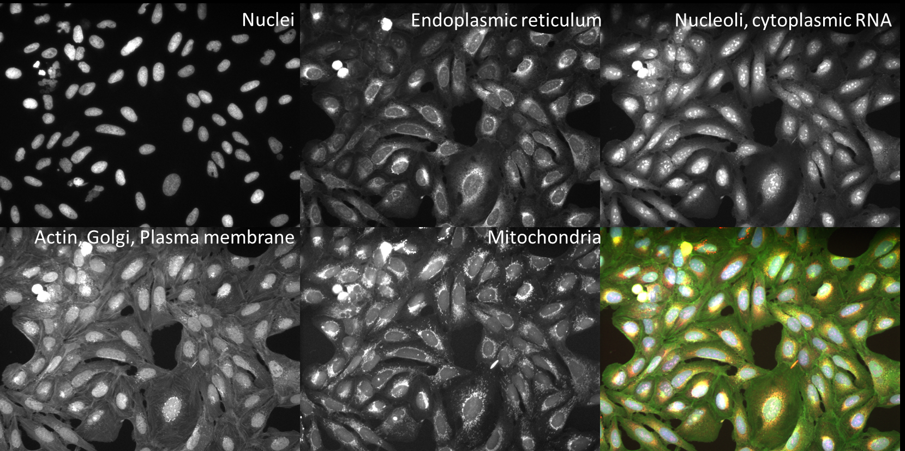
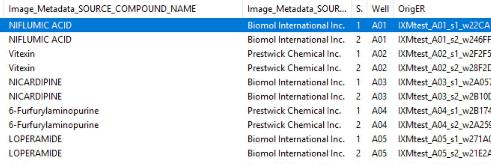
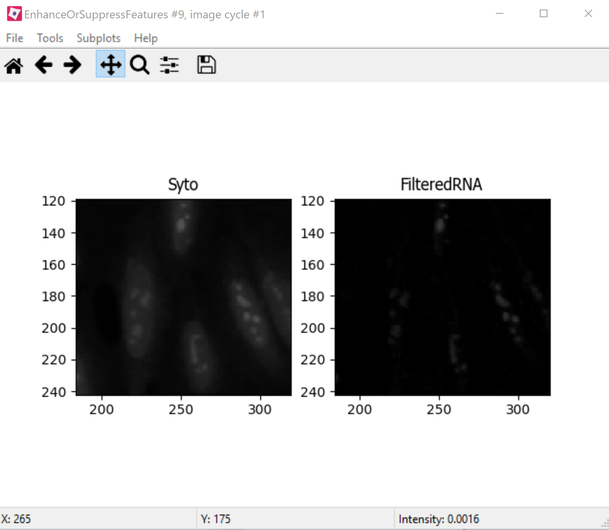
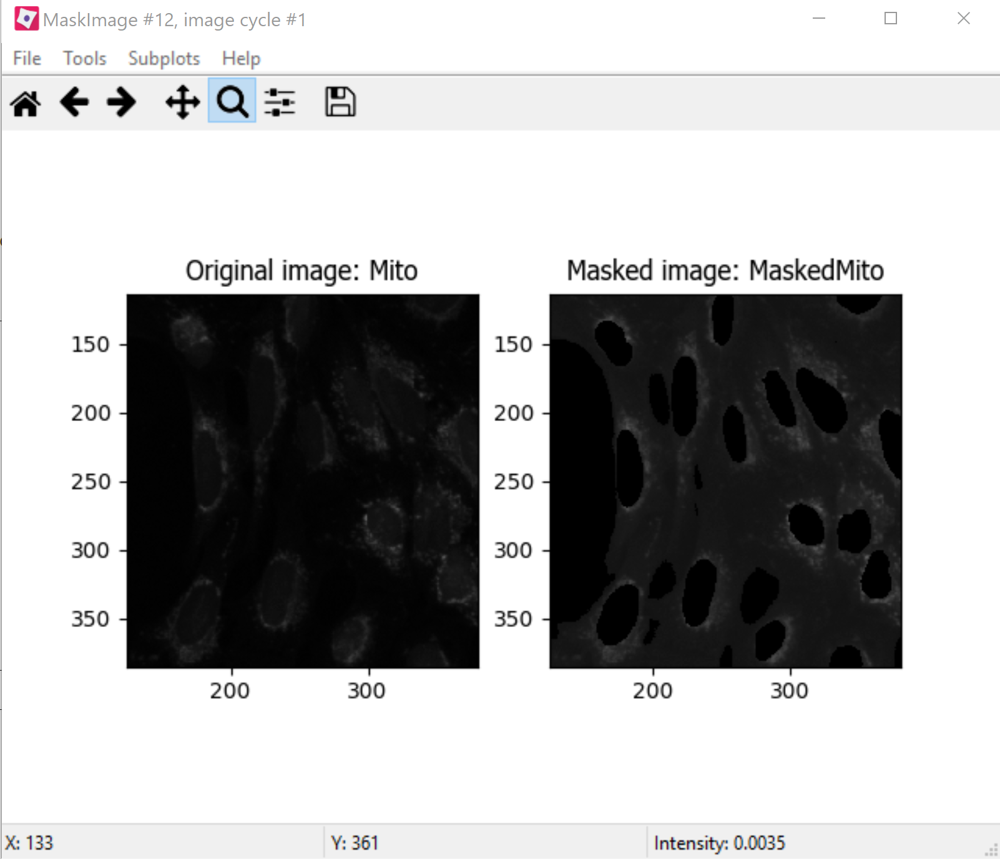
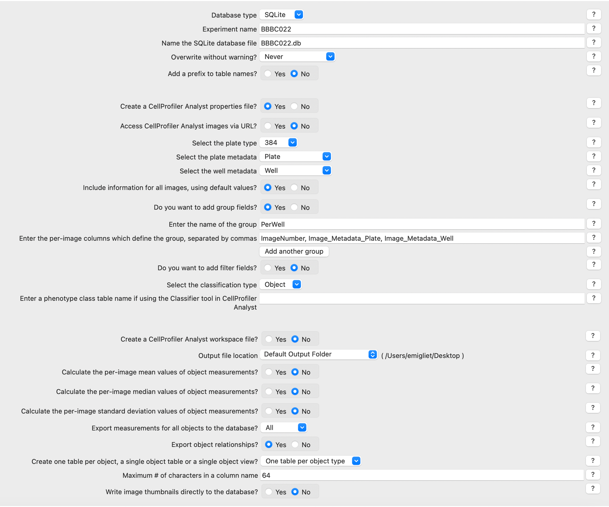
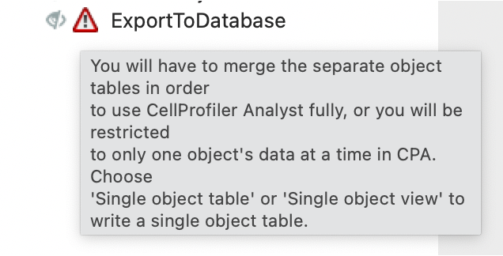
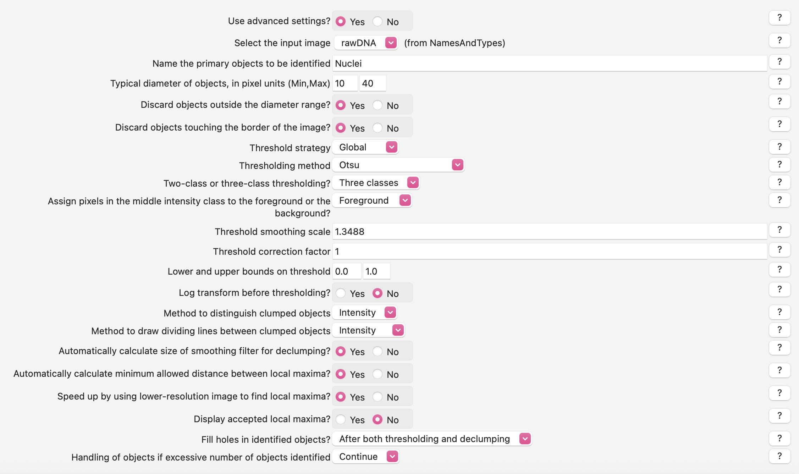

Day 2, Exercise 2: Advanced Segmentation and Organelle Analysis#
Lab authors: Beth Cimini, Erin Weisbart.
Learning Objectives#
Learn to create classical segmentation settings robust to debris and blurriness
Examine an example pipeline which contains complicated matching parameters in the NamesAndTypes module
Learn to segment multiple organelles and associate them with their parent cell
Learn how to handle segmenting cells in images without a cell body stain
This exercise uses the Advanced Segmentation dataset and the Translocation dataset.
Part I: Advanced Segmentation Dataset#
Background information#
The Advanced Segmentation images in this experiment come from the Broad Bioimage Benchmark Collection. They are 240 of 69,120 fields of U2OS cells treated with a panel of 1600 known bioactive compounds and imaged in five channels for a so-called Cell Painting assay- see Gustafsdottir et al, 2013 for more information. The compounds target a wide range of cell pathways, meaning that some cells and organelles will have very different morphologies both from each other and from the mock treated controls. This will give you an opportunity to try to find segmentation parameters that work across a wide range of conditions.
{kind=link}

Fig. 20 Figure 1: Images and channels from a CellPainting assay.#
While in the traditional Cell Painting protocol we do not actually segment out any organelles (other than the nucleus), the large number of stained compartments make this an excellent set of images to find subcellular features. Finding the average or count of smaller objects inside a larger parent object is a feature of many pipelines and an important skill to have in setting up a CellProfiler analysis.
Cell Painting generally consists of a few simple segmentation steps followed by adding as many measurement modules as can be reasonably included in a single pipeline; we have found that by doing this we can measure ~1500 features of each cell and from that create a “morphological profile” that can be used to predict interesting biology including drug mechanisms of action, gene-pathway interactions, and more. See Bray et al 2016 and citations within for more information.
These 1200 images (240 sites in 5 channels) represent 120 wells from a single 384 well plate, either mock treated with DMSO or treated with a variety of bioactive compounds. A CSV file containing associated drug treatment information has also been included.
Goals of this exercise#

Fig. 21 Figure 2: Examples of varied nuclei found in the Advanced Segmentation dataset.#
Advanced Segmentation. This exercise will give you practice at finding segmentation parameters that will be robust across whatever variability may exist in your sample. This is not always straightforward, so examining your segmentation across a wide range of images will be necessary.
Object Relationships. This exercise will additionally show you some ways to pull out smaller features in your image by segmenting organelles within the cells and nuclei. You will also be shown how to use
RelateObjectsso that you can study the average counts, distances, and measurements of the smaller organelles inside their larger parent objects.Advanced Input Modules. This exercise walks you through troubleshooting and tuning the CellProfiler input modules.
Input images and configure metadata#
1. Load images and metadata#
Drag and drop the
BBBC022_Analysis_Start.cppipefile into theAnalysis modulesbox. 7 modules should pop up, and almost all of them will show errors (the red X’s next to the module names). This is the expected behavior.Drag and drop the
BBBC022_20585_AEfolder into theFile listbox. It should automatically populate. Notice that illumination correction images (with a file extension of.npy) are included in this data set.
{kind=link}
2. Import metadata from the CSV#
So that we can explore what cells treated with different drugs look like later in the exercise, we must add this information into CellProfiler from the CSV. Provided with this exercise is a CSV called 20585_AE.csv detailing drug treatment info for each image.
In the
Metadatamodule, three metadata extraction methods should already be present and fully configured:The first pulls Well, Site, and Channel metadata from all of the image files except for the illumination correction functions
The second pulls
Platemetadata from the image folderThe third pulls
Platemetadata from the illumination correction functions
The fourth metadata extraction step requires you to tell CellProfiler the location of the CSV file. It is looking for it in CellProfiler’s Default Input Folder, which we must therefore configure.
Select the
 button in the bottom left corner of the screen.
button in the bottom left corner of the screen.Set the
Default Input Folderto the location of20585_AE.csvwithin the exercise folder
Return to the
Metadatamodule and pressUpdate. You should now see a number of columns in the Metadata window.If you like, examine the CSV and how the
Match file and imagesettings are configured:Image_Metadata_PlateID(from the spreadsheet) is matched toPlate(extracted from the folder name by the second extraction step)Image_Metadata_CPD_WELL_POSITION(from the spreadsheet) is matched toWell(extracted from the file name by the first extraction step)
3. Examine the channel mappings in NamesAndTypes (optional)#
The channel mapping here is a bit more complicated than anything we’ve worked with before - we have a single set of illumination correction images that map to each and every well and site. We can use the metadata we extracted in the last module to make that association possible.
Two different ways of mapping images to channel names are demonstrated here. There are several others, and often you could create several correct mappings for a given set of images, but these may serve as a helpful example to refer to in your own work.
The
.tifimage files are assigned a name by the Metadata extracted in the previous module (specificallyChannelNumber)The
.npyillumination correction functions are assigned a name based on a unique string in the name (such asIllumER).
Scroll to the bottom of the
NamesAndTypesto see how the image sets are constructed.Image set matchingis set toMetadata.Each image channel is set to
Plate->Well->Site.Each illumination correction function is set to
Plate->(None)->(None)as there is one illumination correction function that is applied to all images on a plate for each channe.
As there is only one set of illumination correction functions for each entire plate, the image sets cannot simply be constructed by using
Image set matchingasOrder. Metadata based matching can be useful in any circumstance where a larger group of images needs to be mapped with a smaller one, such as every plate in an image set having its own illumination correction function or every movie in a series of timelapse movies being matched to its own unique cropping mask.

Fig. 22 Figure 3: A section of the Image set matching dialog.#
Illumination correction#
4. Examine the output of the CorrectIlluminationApply module (optional)#
Since microscope objectives don’t typically have a completely uniform illumination pattern, applying an illumination correction function can help make segmentation better and measurements more even by compensating for this. Pay close attention to the top of the field of view to see the greatest effect.
Enter test mode and hit
Stepto run theCorrectIlluminationApplymodule. Remember that you may need to click the eye icon next to each step to be able to see the module’s display.Briefly examine the output of the
CorrectIlluminationApplymodule - you can see that the illumination correction functions show significant heterogeneity across the field of view.These functions were created by averaging and smoothing all 3456 images from this plate, indicating the image captured is consistently dimmer in those regions for nearly all images.
Also note that while the illumination correction functions for each channel are similar, they aren’t identical; each channel in your own experiments should therefore be illumination corrected independently. We also calculate illumination correction functions separately for each plate in an experiment because we assume that any time a plate goes on and off a microscope there has been opporutnity for settings to change or hardware to be bumped and therefore the necessary correction to be affected.

Fig. 23 Figure 4: Application of the illumination correction functions.#
Segment Nuclei, Cells and Cytoplasm#
5. IdentifyPrimaryObjects - Nuclei#
Next we’ll take a first pass at identifying nuclei and cells in our initial image.
After the
CorrectIlluminationApplymodule but before any others, add anIdentifyPrimaryObjectsmodule (from theObject Processingmodule category).Create objects called
Nucleiby segmenting on the Hoechst channel. HitStepto run the module. How does your segmentation look?Use the magnifying glass at the top of the window to zoom in on an area that was segmented poorly, then update some of your parameters in
IdentifyPrimaryObjectsand hitStepto rerun the segmentation.Adjust the segmentation parameters until you feel you’re ready to move on to identifying the cells around the nuclei. You will test the parameters for robustness later so the identification should be good but doesn’t need to be perfect before you move on.
6. IdentifySecondaryObjects - Cells#
After the
IdentifyPrimaryObjectsmodule but before theEnhanceOrSuppressFeaturesmodule, add anIdentifySecondaryObjectsmodule.Create an object called
Cellsthat is seeded on theNucleiprimary objects that you just created; use thePh_golgiimage.For the purposes of this exercise, you need not worry about excluding cell bodies that touch the edge of the image.
Examine the segmentation and adjust the segmentation parameters until you feel you’re ready to test them on another image; they need not be perfect before you move on.
7. Test the robustness of your segmentation parameters across multiple compounds#
It’s (relatively!) easy to come up with a good set of segmentation parameters for a single image or a set of similar images; this data set however contains images from cells treated with many different classes of drugs, many of which have very different phenotypes. It’s valuable to learn how to create a set of parameters that can segment cells that display a variety of morphologies since you may come across a similar problem in your own experiments!
Go to
Test->Choose Image Setto bring up a list of the images in your experiment.
{kind=link}

Fig. 24 Figure 5: A section of the Choose Image Set menu.#
Look at the column titled
Image_Metadata_SOURCE_COMPOUND_NAMEto see what chemical was used in each well of the experiment. You may click on the column to sort the whole table by the values in it if you so desire.Choose a row where
Image_Metadata_SOURCE_COMPOUND_NAMEis blank - this will be a mock treated well. Press theOKbutton, then run that image in test mode for your first 3 modules (through yourIdentifySecondaryObjectsstep). Examine the output – did your nuclear and cellular segmentation hold up compared to the first images you looked at? Once your segmentation is good, try it on one additional mock treated image.Test your segmentation on images from a few different compounds - you may choose ones you’ve worked with before, random ones, or some combination. If possible, avoid using multiple compounds you KNOW have the same mechanism of action, though it’s alright if they occasionally do. Update your segmentation parameters until they work well on a few different compound wells, then go back to a mock treated well to make sure it still works well there.
You’re encouraged to explore the compound list on your own, but if you find yourself consistently ending up with images that look similar you can try adding images from the following list of wells - A08, A12, B12, B18, C7, D6, D19, D22, E3
Some hints on what to play with: - In both
IdentifyPrimaryObjectsandIdentifySecondaryObjectsadjusting the threshold limits can be a good thing for when wells are empty, confluent, or have bright debris in them - In bothIdentifyPrimaryObjectsandIdentifySecondaryObjectsadjusting the threshold method may lead to better (or worse!) results - InIdentifyPrimaryObjects, adjusting the declumping settings (make sure to turnUse advanced settings?on) will probably be necessary for a robust segmentation - InIdentifySecondaryObjects, you will want to test the effects of using the various methods for identifying secondary objects (Propagation,Watershed-Image,Distance-N, etc.) and, if usingPropagation, the regularization factor.
8. IdentifyTertiaryObjects - Cytoplasm#
After the
IdentifySecondaryObjectsmodule but before theEnhanceOrSuppressFeaturesmodule, add anIdentifyTertiaryObjectsmodule.Create an object called
Cytoplasmusing theCellandNucleiobjects you’ve created;Shrink smaller object prior to subtraction?should both set toNo.
Segment Nucleoli inside the Nuclei#
9. Examine the steps used to segment the Nucleoli#
The next 3 modules have to do with the creation of the Nucleoli objects. Look at the output from each to see how the image is transformed to aid in segmentation.
EnhanceOrSuppressFeaturesis a module that helps enhance particular parts of an image - in this case, punctate objects orSpeckles. By specifying the feature size, you can enhance different parts of the object. As we are looking for nucleoli, we apply this to the RNA channel (Syto) image, and call the outputFilteredRNA. (See Fig 6 below)MaskImage allows you to create a version of the
FilteredRNAimage calledSytoNucleiwhere all of the pixels except the ones you specify are set to an intensity of 0- in this case, we set to 0 any pixel not inside a nucleus. By doing this, we can decrease the likelihood of detecting the cytoplasmic RNA dots.IdentifyPrimaryObjectsis used to find theNucleoli- this is a Primary object segmentation because we are not using another object as a seed to grow around, but only segmenting based off the intensity in ourSytoNucleiimage.If you like, you can add an
OverlayOutlinesmodule at this point to overlay the identified nucleoli on the original Syto image to assure yourself that the segmentation not only matches the speckle-enhancedSytoNucleiimage, but also looks accurate on the unprocessed image as well. This is not necessary but can be a nice “sanity check”. Remember that you can always use the Workspace viewer to look at multiple images and objects together as well.
{kind=link}

Fig. 25 Figure 6: Enhancing the Syto image allows you to isolate nucleoli against the nucleoplasmic background signal.#
Segment the Mitochondria inside the Cytoplasm#
10. Mask the Mito image by the Cytoplasm object#
Now that you’ve seen an example of how to segment an organelle, you will do so for Mitochondria in the following steps.
After the
IdentifyPrimaryObjectsmodule for Nucleoli but before theRelateObjectsmodules, add aMaskImagemodule (from theImage Processingmodule category).Call your output image
MaskedMito.As you saw above with the Nucleoli example, mask the image via Objects, and use the Cytoplasm objects to create the mask.
You may even experiment with doing a similar
EnhanceOrSuppressFeaturesstep before the masking as was used for the Nucleoli; you may get greater signal-to-noise, but possibly at the expense of “fragmenting” the Mitochondria objects in the later identification steps.
{kind=link}

Fig. 26 Figure 7: The MaskedMito image contains only the regions of interest.#
12. IdentifyPrimaryObjects- Mitochondria#
After your MaskImage module but before the
RelateObjectsmodules, add anIdentifyPrimaryObjectsmodule to identify Mitochondria from your MaskedMito image.You should consider using a wide range of pixel sizes here; 2-20 is a reasonable first place to start.
If you did use
EnhanceOrSuppressFeaturesin the previous step, usingOverlayOutlinesto compare the outlines with the original image is a good idea once again.
Perform Measurements#
13. Add measurement modules to your pipeline#
After your segmentation of the mitochondria but before the
RelateObjectsmodules, add as many object measurement modules as you would like.Some suggested modules to add:
MeasureObjectSizeShape,MeasureObjectIntensity,MeasureGranularity,MeasureObjectNeighbors.Which objects do you think would be valuable to measure with each of these modules? Which channels would you measure your objects in?
For a typical Cell Painting experiment you would add as many measurements as possible, but that isn`t necessary here; however, do make sure every object gets at least some measurements.
While
MeasureCorrelation,MeasureTexture, andMeasureObjectIntensityDistributioncan produce valuable data for downstream profiling, they can be memory-intensive and/or slow so should not be added for this example pipeline in the interest of pipeline run time.MeasureNeuronsis not well suited for this pipeline.
Export data#
In order to use the data visualization and machine learning tools in CellProfiler Analyst, the measurements will need to be saved to a database using the ExportToDatabase.
Add a module ExportToDatabase located under the module “File Processing” category
NOTE: while in Test mode, the ExportToDatabase module will have a yellow warning sign in the pipeline panel and yellow-highlighted text in the module settings. Holding the mouse over the yellow-highlighted text informs the user that measurements produced in Test mode are not written to the database. This is normal behavior and does NOT indicate an error.
Set up the module as in the image below:
{kind=link}

Fig. 27 Figure 8: The ExportToDatabase module. The yellow warning symbol warns you that since you’ve chosen to make individual tables for each object, you will only be able to examine one object at a time in CellProfiler Analyst.#
Check the box “Write image thumbnails directly to database?” From the list-box that subsequently appears, select “rawDNA” and “rawGFP”; you can make multiple selections by using Ctrl-click (Windows) or Command-click (Mac). Leave the rest of the settings at the default values.
NOTE: Because you have different object counts for some of your different types of objects (the counts of Nuclei, Cells, and Cytoplasm will be the same, but the counts of Mitochondria and Nucleoli will not be), you will not be able to export the objects as a single data table but must instead use a different data table for each object. This will not affect the actual outcome of the experiment, but will mean that each object will get its own properties file and that you can only look at the measurement for one object at a time in CellProfiler Analyst.
{kind=link}

Fig. 28 Figure 9: The warning symbol warns you that since you’ve chosen to make individual tables for each object, you will only be able to examine one object at a time in CellProfiler Analyst.#
Relate Nucleoli and Mitochondria to their respective Nuclei/Cells#
14. Examine the settings of RelateObjects#
After your Measurement and before your Export modules you should find two
RelateObjectsmodules. One relates Nucleoli to Nuclei, while the other relates Mitochondria to Cells.Relating the objects allows you to create per-parent means (ie, for this cell what is the average size of an individual mitochondrion) and calculate distances from the child objects to the edge and/or the center of the parent (ie how far is each nucleolus from the center of the nucleus).
Perform the analysis on ALL the images#
15. Run the pipeline (optional)#
If you have time and/or if you`d like to play with the data in CellProfiler Analyst later, exit test mode, close the eyes next to each module, and run the pipeline
The pipeline will create a database called
BBBC022.db, containing the output of all of the measurements you have added to your pipeline
16. Run the pipeline with ExportToSpreadsheet (optional)#
If you have the time and would like to be able to explore the data in a more familiar manner (i.e. as a
.csv), add anExportToSpreadsheetmodule at the end of the pipeline. LikeExportToDatabase, this module will not work in Test mode but will in Analysis mode.The pipeline will output a
.csvfor each Object identified in the pipeline along with anImage.csvfor whole-image measurements andExperiment.csvfor information on the pipeline/run.
Part II: Segment images without cell stains#
Background information#
We are now going to shift gears a bit and examine another challenging image analysis situation. What do you do when you need to segment cell bodies but you don’t have a cell stain? We are going to now switch to the Translocation dataset.
In this experiment, we are working with human U2OS osteosarcoma (bone cancer) cells, in which a Forkhead-protein FOXO1A has been labeled with GFP (Green Fluorescent Protein). In proliferating cells, FOXO1A is localized in the cytoplasm; it is constantly moving into the nucleus, but is transported out again by export proteins. Upon inhibition of nuclear export, FOXO1A accumulates in the nucleus. We know that 150nM of Wortmannin (the drug we are using as a positive control in this experiment) inhibits transport of the FOXO1A protein from the nucleus back out to the cytoplasm (Fig. 1). Labeling FOXO1A with GFP allows us to visualize its subcellular localization. The goal of developing image-based screens of this type is to aid in the search for unknown drugs that have the same effect as Wortmannin on FOXO1A subcellular localization (and hence may be possible treatments for osteosarcoma patients), but possess fewer side effects than the known drugs.
The images you will be analyzing were taken from cells growing in a standard 96-well plate, but you will work with a subset of only 26 of these images: 8 wells were left untreated (and were therefore negative controls), 8 wells were treated with the maximum dose of the drug Wortmannin (and were therefore positive controls), and 10 wells were used to create a dose gradient with increasing concentration of the drug. In addition to these images, a text file called “Translocation_doses_and_controls.csv” is provided, containing information about where on the 96-well plate the wells were located, and how the cells were treated.
Goals of this exercise#
Segmentation without stains. This excercise introduces an approach for defining Cell segmentation when you don’t have a cell body stain.
Input images#
1. Load images and metadata#
Tune Segmentation#
1. Segment Primary Objects - Nuclei#
If you start test mode and examine the default Nuclei segmentation parameters, you’ll see that they need some tuning! Since you are now experts at segmentation, you can spend some time optimizing Nuclei segmentation in this module, or you can skip to tuning it with the following parameters if you want to save some time:

2. Segment Secondary Objects - Cells#
Add an
IdentifySecondaryObjectsmodule to your pipeline.For the
Select the input imagemodule setting, selectrawGFPfrom the drop-down list.For the
Select input objectssetting, selectNucleifrom the drop-down list.For the
Name the objects to be identifiedsetting, enterCellsas a descriptive name for the secondary objects.
Start test mode and look at the secondary segmentation you are getting. How does it look? What about your image is making it challenging? Remember that you can change the brightness of the image by right clicking on it and selecting Adjust Contrast and sliding the Maximum Brightness.
For images that are bright in some areas and dim in others, sometimes using Adaptive as the Threshold Strategy can help as it means that the algorithm looks in a local window rather than the whole image to determine the best threshold. Does it fix segmentation in this image?
Instead, it looks like we will need to change the segmentation parameters to more specifically find the dimmer cells. We can do this by using an algorithm that looks for three peaks and tell it that the middle peak and the upper peak are both foreground.
Click the drop-down box next to
Threshold strategyand selectGlobal.Click the drop-down next to
Thresholding methodto selectOtsu.Click the setting labeled
Two-class or three-class thresholding?and selectThree classes.Change the setting
Assign pixels…that subsequently appears underneath toForeground.Change the
Threshold correction factorto.8.
Look at the results in test mode. Is segmentation better? Is it as good as you want?
Now step to the next image in test mode by going to Test=>Next image set. What happened!? If you think back to the origianl description of this dataset, you’ll remember that in some conditions we expect our GFP labeled protein to be in the Cytoplasm and in some conditions we expect it to be in the Nucleus. So what do we do?
3. Segment Secondary Objects - “Good Enough” Cells#
In designing any experiment, it’s important to think carefully about “What are you trying to quantify?” In this experiment, our question is whether our GFP marked protein is in the nucelus or not. To answer this, we don’t actually need really careful cell segmentation. We need accurate nucelar segmentation but we can actually just define a region around the nucleus as a “good enough” cellular segmentation which will help us get around both the problems of having different GFP intensities in the cytoplasm in a single image and having images without any GFP in the cytoplasm.
We will now take a look at the Distance-N method which expands outward from the nucleus a fixed number of pixels without regard to the underlying fluorescence.
Change the
Select method…setting fromPropagationtoDistance-N.Change the setting
Number of pixels by which to expand…that appears underneath to10pixels.
Use test mode and inspect several different images from the dataset. You should see that this new “good enough” method gives you similar results for all cells in all images.